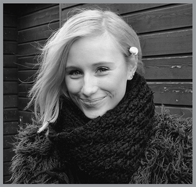
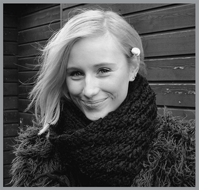
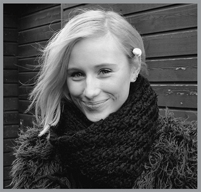
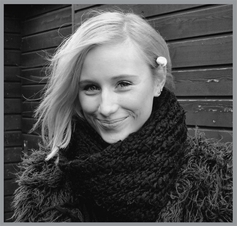

Mit navn er Julie Bagerskov.
Jeg er opvokset i en lille by nær Roskilde.
Min nuværende bopæl er på Amager.
Jeg er 22 år gammel og læser til multimediedesign på
Cph Business i Lyngby.
Jeg har taget en fuld HF på VUC i Roskilde.
Jeg har lavet videoer af fester bl.a. af polterabender og fødselsdage.
Derudover har jeg også brugt meget af min fritid på at tage billeder,
male, tegne og lave plancher.
Jeg tager altid en kreativ udfordring op.